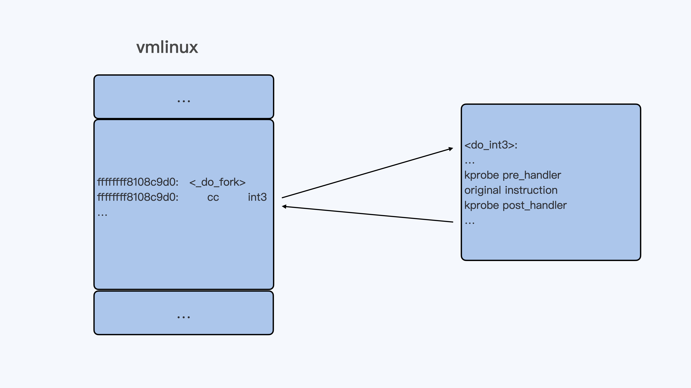
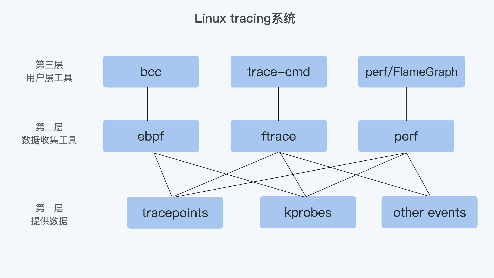

- 00 开篇词 一个态度两个步骤，成为容器实战高手.md.html
- 01 认识容器：容器的基本操作和实现原理.md.html
- 02 理解进程（1）：为什么我在容器中不能kill 1号进程？.md.html
- 03 理解进程（2）：为什么我的容器里有这么多僵尸进程？.md.html
- 04 理解进程（3）：为什么我在容器中的进程被强制杀死了？.md.html
- 05 容器CPU（1）：怎么限制容器的CPU使用？.md.html
- 06 容器CPU（2）：如何正确地拿到容器CPU的开销？.md.html
- 07 Load Average：加了CPU Cgroup限制，为什么我的容器还是很慢？.md.html
- 08 容器内存：我的容器为什么被杀了？.md.html
- 09 Page Cache：为什么我的容器内存使用量总是在临界点.md.html
- 10 Swap：容器可以使用Swap空间吗？.md.html
- 11 容器文件系统：我在容器中读写文件怎么变慢了？.md.html
- 12 容器文件Quota：容器为什么把宿主机的磁盘写满了？.md.html
- 13 容器磁盘限速：我的容器里磁盘读写为什么不稳定_.md.html
- 14 容器中的内存与IO：容器写文件的延时为什么波动很大？.md.html
- 15 容器网络：我修改了_proc_sys_net下的参数，为什么在容器中不起效？.md.html
- 16 容器网络配置（1）：容器网络不通了要怎么调试.md.html
- 17 容器网络配置（2）：容器网络延时要比宿主机上的高吗.md.html
- 18 容器网络配置（3）：容器中的网络乱序包怎么这么高？.md.html
- 19 容器安全（1）：我的容器真的需要privileged权限吗.md.html
- 20 容器安全（2）：在容器中，我不以root用户来运行程序可以吗？.md.html
- 加餐01 案例分析：怎么解决海量IPVS规则带来的网络延时抖动问题？.md.html
- 加餐02 理解perf：怎么用perf聚焦热点函数？.md.html
- 加餐03 理解ftrace（1）：怎么应用ftrace查看长延时内核函数？.md.html
- 加餐04 理解ftrace（2）：怎么理解ftrace背后的技术tracepoint和kprobe？.md.html
- 加餐05 eBPF：怎么更加深入地查看内核中的函数？.md.html
- 加餐06 BCC：入门eBPF的前端工具.md.html
- 结束语 跳出舒适区，突破思考的惰性.md.html
- 捐赠
加餐04 理解ftrace（2）：怎么理解ftrace背后的技术tracepoint和kprobe？
你好，我是程远。
前面两讲，我们分别学习了perf和ftrace这两个最重要 Linux tracing工具。在学习过程中，我们把重点放在了这两个工具最基本的功能点上。
不过你学习完这些之后，我们内核调试版图的知识点还没有全部点亮。
如果你再去查看一些perf、ftrace或者其他Linux tracing相关资料，你可能会常常看到两个单词，“tracepoint”和“kprobe”。你有没有好奇过，这两个名词到底是什么意思，它们和perf、ftrace这些工具又是什么关系呢？
这一讲，我们就来学习这两个在Linux tracing系统中非常重要的概念，它们就是tracepoint和kprobe。
tracepoint和kprobe的应用举例
如果你深入地去看一些perf或者ftrace的功能，这时候你会发现它们都有跟tracepoint、kprobe相关的命令。我们先来看几个例子，通过这几个例子，你可以大概先了解一下tracepoint和kprobe的应用，这样我们后面做详细的原理介绍时，你也会更容易理解。
首先看看tracepoint，tracepoint其实就是在Linux内核的一些关键函数中埋下的hook点，这样在tracing的时候，我们就可以在这些固定的点上挂载调试的函数，然后查看内核的信息。
我们通过下面的这个 perf list 命令，就可以看到所有的tracepoints：
# perf list | grep Tracepoint
alarmtimer:alarmtimer_cancel [Tracepoint event]
alarmtimer:alarmtimer_fired [Tracepoint event]
alarmtimer:alarmtimer_start [Tracepoint event]
alarmtimer:alarmtimer_suspend [Tracepoint event]
block:block_bio_backmerge [Tracepoint event]
block:block_bio_bounce [Tracepoint event]
block:block_bio_complete [Tracepoint event]
block:block_bio_frontmerge [Tracepoint event]
block:block_bio_queue [Tracepoint event]
…
至于ftrace，你在tracefs文件系统中，也会看到一样的tracepoints：
# find /sys/kernel/debug/tracing/events -type d | sort
/sys/kernel/debug/tracing/events
/sys/kernel/debug/tracing/events/alarmtimer
/sys/kernel/debug/tracing/events/alarmtimer/alarmtimer_cancel
/sys/kernel/debug/tracing/events/alarmtimer/alarmtimer_fired
/sys/kernel/debug/tracing/events/alarmtimer/alarmtimer_start
/sys/kernel/debug/tracing/events/alarmtimer/alarmtimer_suspend
/sys/kernel/debug/tracing/events/block
/sys/kernel/debug/tracing/events/block/block_bio_backmerge
/sys/kernel/debug/tracing/events/block/block_bio_bounce
/sys/kernel/debug/tracing/events/block/block_bio_complete
/sys/kernel/debug/tracing/events/block/block_bio_frontmerge
…
为了让你更好理解，我们就拿“do_sys_open”这个tracepoint做例子。在内核函数do_sys_open()中，有一个trace_do_sys_open()调用，其实它这就是一个tracepoint：
long do_sys_open(int dfd, const char __user *filename, int flags, umode_t mode)
{
struct open_flags op;
int fd = build_open_flags(flags, mode, &op);
struct filename *tmp;
if (fd)
return fd;
tmp = getname(filename);
if (IS_ERR(tmp))
return PTR_ERR(tmp);
fd = get_unused_fd_flags(flags);
if (fd >= 0) {
struct file *f = do_filp_open(dfd, tmp, &op);
if (IS_ERR(f)) {
put_unused_fd(fd);
fd = PTR_ERR(f);
} else {
fsnotify_open(f);
fd_install(fd, f);
trace_do_sys_open(tmp->name, flags, mode);
}
}
putname(tmp);
return fd;
}
接下来，我们可以通过perf命令，利用tracepoint来查看一些内核函数发生的频率，比如在节点上，统计10秒钟内调用do_sys_open成功的次数，也就是打开文件的次数。
# # perf stat -a -e fs:do_sys_open -- sleep 10
Performance counter stats for 'system wide':
7 fs:do_sys_open
10.001954100 seconds time elapsed
同时，如果我们把tracefs中do_sys_open的tracepoint打开，那么在ftrace的trace输出里，就可以看到具体do_sys_open每次调用成功时，打开的文件名、文件属性、对应的进程等信息。
# pwd
/sys/kernel/debug/tracing
# echo 1 > events/fs/do_sys_open/enable
# cat trace
# tracer: nop
#
# _-----=> irqs-off
# / _----=> need-resched
# | / _---=> hardirq/softirq
# || / _--=> preempt-depth
# ||| / delay
# TASK-PID CPU# |||| TIMESTAMP FUNCTION
# | | | |||| | |
systemd-1 [011] .... 17133447.451839: do_sys_open: "/proc/22597/cgroup" 88000 666
bash-4118 [009] .... 17133450.076026: do_sys_open: "/" 98800 0
salt-minion-7101 [010] .... 17133450.478659: do_sys_open: "/etc/hosts" 88000 666
systemd-journal-2199 [011] .... 17133450.487930: do_sys_open: "/proc/6989/cgroup" 88000 666
systemd-journal-2199 [011] .... 17133450.488019: do_sys_open: "/var/log/journal/d4f76e4bf5414ac78e1c534ebe5d0a72" 98800 0
systemd-journal-2199 [011] .... 17133450.488080: do_sys_open: "/proc/6989/comm" 88000 666
systemd-journal-2199 [011] .... 17133450.488114: do_sys_open: "/proc/6989/cmdline" 88000 666
systemd-journal-2199 [011] .... 17133450.488143: do_sys_open: "/proc/6989/status" 88000 666
systemd-journal-2199 [011] .... 17133450.488185: do_sys_open: "/proc/6989/sessionid" 88000 666
…
请注意，Tracepoint是在内核中固定的hook点，并不是在所有的函数中都有tracepoint。
比如在上面的例子里，我们看到do_sys_open()调用到了do_filp_open()，但是do_filp_open()函数里是没有tracepoint的。那如果想看到do_filp_open()函数被调用的频率，或者do_filp_open()在被调用时传入参数的情况，我们又该怎么办呢？
这时候，我们就需要用到kprobe了。kprobe可以动态地在所有的内核函数（除了inline函数）上挂载probe函数。我们还是结合例子做理解，先看看perf和ftraces是怎么利用kprobe来做调试的。
比如对于do_filp_open()函数，我们可以通过perf probe添加一下，然后用perf stat 看看在10秒钟的时间里，这个函数被调用到的次数。
# perf probe --add do_filp_open
# perf stat -a -e probe:do_filp_open -- sleep 10
Performance counter stats for 'system wide':
11 probe:do_filp_open
10.001489223 seconds time elapsed
我们也可以通过ftrace的tracefs给do_filp_open()添加一个kprobe event，这样就能查看do_filp_open()每次被调用的时候，前面两个参数的值了。
这里我要给你说明一下，在写入kprobe_event的时候，对于参数的定义我们用到了“%di”和“%si”。这是x86处理器里的寄存器，根据x86的Application Binary Interface的文档，在函数被调用的时候，%di存放了第一个参数，%si存放的是第二个参数。
# echo 'p:kprobes/myprobe do_filp_open dfd=+0(%di):u32 pathname=+0(+0(%si)):string' > /sys/kernel/debug/tracing/kprobe_event
完成上面的写入之后，我们再enable这个新建的kprobe event。这样在trace中，我们就可以看到每次do_filp_open（）被调用时前两个参数的值了。
# echo 1 > /sys/kernel/debug/tracing/events/kprobes/myprobe/enable
# cat /sys/kernel/debug/tracing/trace
…
irqbalance-1328 [005] .... 2773211.189573: myprobe: (do_filp_open+0x0/0x100) dfd=4294967295 pathname="/proc/interrupts"
irqbalance-1328 [005] .... 2773211.189740: myprobe: (do_filp_open+0x0/0x100) dfd=638399 pathname="/proc/stat"
irqbalance-1328 [005] .... 2773211.189800: myprobe: (do_filp_open+0x0/0x100) dfd=638399 pathname="/proc/irq/8/smp_affinity"
bash-15864 [004] .... 2773211.219048: myprobe: (do_filp_open+0x0/0x100) dfd=14819 pathname="/sys/kernel/debug/tracing/"
bash-15864 [004] .... 2773211.891472: myprobe: (do_filp_open+0x0/0x100) dfd=6859 pathname="/sys/kernel/debug/tracing/"
bash-15864 [004] .... 2773212.036449: myprobe: (do_filp_open+0x0/0x100) dfd=4294967295 pathname="/sys/kernel/debug/tracing/"
bash-15864 [004] .... 2773212.197525: myprobe: (do_filp_open+0x0/0x100) dfd=638259 pathname="/sys/kernel/debug/tracing/
…
好了，我们通过perf和ftrace的几个例子，简单了解了tracepoint和kprobe是怎么用的。那下面我们再来看看它们的实现原理。
Tracepoint
刚才，我们已经看到了内核函数do_sys_open()里调用了trace_do_sys_open()这个treacepoint，那这个tracepoint是怎么实现的呢？我们还要再仔细研究一下。
如果你在内核代码中，直接搜索“trace_do_sys_open”字符串的话，并不能找到这个函数的直接定义。这是因为在Linux中，每一个tracepoint的相关数据结构和函数，主要是通过”DEFINE_TRACE”和”DECLARE_TRACE”这两个宏来定义的。
完整的“DEFINE_TRACE”和“DECLARE_TRACE”宏里，给每个tracepoint都定义了一组函数。在这里，我会选择最主要的几个函数，把定义一个tracepoint的过程给你解释一下。
首先，我们来看“trace_##name”这个函数（提示一下，这里的“##”是C语言的预编译宏，表示把两个字符串连接起来）。
对于每个命名为“name”的tracepoint，这个宏都会帮助它定一个函数。这个函数的格式是这样的，以“trace_”开头，再加上tracepoint的名字。
我们举个例子吧。比如说，对于“do_sys_open”这个tracepoint，它生成的函数名就是trace_do_sys_open。而这个函数会被内核函数do_sys_open()调用，从而实现了一个内核的tracepoint。
static inline void trace_##name(proto) \
{ \
if (static_key_false(&__tracepoint_##name.key)) \
__DO_TRACE(&__tracepoint_##name, \
TP_PROTO(data_proto), \
TP_ARGS(data_args), \
TP_CONDITION(cond), 0); \
if (IS_ENABLED(CONFIG_LOCKDEP) && (cond)) { \
rcu_read_lock_sched_notrace(); \
rcu_dereference_sched(__tracepoint_##name.funcs);\
rcu_read_unlock_sched_notrace(); \
} \
}
在这个tracepoint函数里，主要的功能是这样实现的，通过__DO_TRACE来调用所有注册在这个tracepoint上的probe函数。
#define __DO_TRACE(tp, proto, args, cond, rcuidle) \
…
it_func_ptr = rcu_dereference_raw((tp)->funcs); \
\
if (it_func_ptr) { \
do { \
it_func = (it_func_ptr)->func; \
__data = (it_func_ptr)->data; \
((void(*)(proto))(it_func))(args); \
} while ((++it_func_ptr)->func); \
}
…
…
而probe函数的注册，它可以通过宏定义的“registertrace##name”函数完成。
static inline int \
register_trace_##name(void (*probe)(data_proto), void *data) \
{ \
return tracepoint_probe_register(&__tracepoint_##name, \
(void *)probe, data); \
}
我们可以自己写一个简单kernel module来注册一个probe函数，把它注册到已有的treacepoint上。这样，这个probe函数在每次tracepoint点被调用到的时候就会被执行。你可以动手试一下。
好了，说到这里，tracepoint的实现方式我们就讲完了。简单来说就是在内核代码中需要被trace的地方显式地加上hook点，然后再把自己的probe函数注册上去，那么在代码执行的时候，就可以执行probe函数。
Kprobe
我们已经知道了，tracepoint为内核trace提供了hook点，但是这些hook点需要在内核源代码中预先写好。如果在debug的过程中，我们需要查看的内核函数中没有hook点，就需要像前面perf/ftrace的例子中那样，要通过Linux kprobe机制来加载probe函数。
那我们要怎么来理解kprobe的实现机制呢？
你可以先从内核samples代码里，看一下
kprobe_example.c代码。这段代码里实现了一个kernel module，可以在内核中任意一个函数名/符号对应的代码地址上注册三个probe函数，分别是“pre_handler”、 “post_handler”和“fault_handler”。
#define MAX_SYMBOL_LEN 64
static char symbol[MAX_SYMBOL_LEN] = "_do_fork";
module_param_string(symbol, symbol, sizeof(symbol), 0644);
/* For each probe you need to allocate a kprobe structure */
static struct kprobe kp = {
.symbol_name = symbol,
};
…
static int __init kprobe_init(void)
{
int ret;
kp.pre_handler = handler_pre;
kp.post_handler = handler_post;
kp.fault_handler = handler_fault;
ret = register_kprobe(&kp);
if (ret < 0) {
pr_err("register_kprobe failed, returned %d\n", ret);
return ret;
}
pr_info("Planted kprobe at %p\n", kp.addr);
return 0;
}
当这个内核函数被执行的时候，已经注册的probe函数也会被执行 （handler_fault只有在发生异常的时候才会被调用到）。
比如，我们加载的这个kernel module不带参数，那么缺省的情况就是这样的：在“_do_fork”内核函数的入口点注册了这三个probe函数。
当_do_fork()函数被调用到的时候，换句话说，也就是创建新的进程时，我们通过dmesg就可以看到probe函数的输出了。
[8446287.087641] <_do_fork> pre_handler: p->addr = 0x00000000d301008e, ip = ffffffffb1e8c9d1, flags = 0x246
[8446287.087643] <_do_fork> post_handler: p->addr = 0x00000000d301008e, flags = 0x246
[8446288.019731] <_do_fork> pre_handler: p->addr = 0x00000000d301008e, ip = ffffffffb1e8c9d1, flags = 0x246
[8446288.019733] <_do_fork> post_handler: p->addr = 0x00000000d301008e, flags = 0x246
[8446288.022091] <_do_fork> pre_handler: p->addr = 0x00000000d301008e, ip = ffffffffb1e8c9d1, flags = 0x246
[8446288.022093] <_do_fork> post_handler: p->addr = 0x00000000d301008e, flags = 0x246
kprobe的基本工作原理其实也很简单。当kprobe函数注册的时候，其实就是把目标地址上内核代码的指令码，替换成了“cc”，也就是int3指令。这样一来，当内核代码执行到这条指令的时候，就会触发一个异常而进入到Linux int3异常处理函数do_int3()里。
在do_int3()这个函数里，如果发现有对应的kprobe注册了probe，就会依次执行注册的pre_handler()，原来的指令，最后是post_handler()。

理论上kprobe其实只要知道内核代码中任意一条指令的地址，就可以为这个地址注册probe函数，kprobe结构中的“addr”成员就可以接受内核中的指令地址。
static int __init kprobe_init(void)
{
int ret;
kp.addr = (kprobe_opcode_t *)0xffffffffb1e8ca02; /* 把一条指令的地址赋值给 kprobe.addr */
kp.pre_handler = handler_pre;
kp.post_handler = handler_post;
kp.fault_handler = handler_fault;
ret = register_kprobe(&kp);
if (ret < 0) {
pr_err("register_kprobe failed, returned %d\n", ret);
return ret;
}
pr_info("Planted kprobe at %p\n", kp.addr);
return 0;
}
还要说明的是，如果内核可以使用我们上一讲ftrace对函数的trace方式，也就是函数头上预留了“callq <fentry>”的5个字节（在启动的时候被替换成了nop）。Kprobe对于函数头指令的trace方式，也会用“ftrace_caller”指令替换的方式，而不再使用int3指令替换。
不论是哪种替换方式，kprobe的基本实现原理都是一样的，那就是把目标指令替换，替换的指令可以使程序跑到一个特定的handler里，去执行probe的函数。
重点小结
这一讲我们主要学习了tracepoint和kprobe，这两个概念在Linux tracing系统中非常重要。
为什么说它们重要呢？因为从Linux tracing系统看，我的理解是可以大致分成大致这样三层。
第一层是最基础的提供数据的机制，这里就包含了tracepoints、kprobes，还有一些别的events，比如perf使用的HW/SW events。
第二层是进行数据收集的工具，这里包含了ftrace、perf，还有ebpf。
第三层是用户层工具。虽然有了第二层，用户也可以得到数据。不过，对于大多数用户来说，第二层使用的友好程度还不够，所以又有了这一层。

很显然，如果要对Linux内核调试，很难绕过tracepoint和kprobe。如果不刨根问底的话，前面我们讲的perf、trace工具对你来说还是黑盒。因为你只是知道了这些工具怎么用，但是并不知道它们依赖的底层技术。
在后面介绍ebpf的时候，我们还会继续学习ebpf是如何使用tracepoint和kprobe来做Linux tracing的，希望你可以把相关知识串联起来。
思考题
想想看，当我们用kprobe为一个内核函数注册了probe之后，怎样能看到对应内核函数的第一条指令被替换了呢？
欢迎你在留言区记录你的思考或者疑问。如果这一讲对你有帮助，也欢迎你转发给同事、朋友，跟他们一起交流、进步。
© 2019 - 2023 Liangliang Lee. Powered by gin and hexo-theme-book.